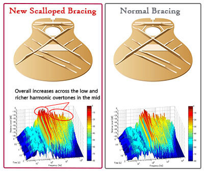
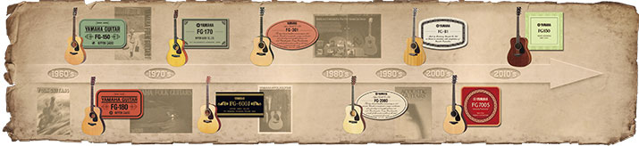

Появившись в 1966 году, гитары Yamaha серии FG доказали, что отличная акустическая гитара не обязательно должна быть дорогой. Созданная с упором на удобство игры, музыкальное звучание и, конечно же превосходное качество изготовления, оригинальная FG180 очень быстро стала настоящей классикой, имеющей в своем послужном списке множество хитовых записей.
50 лет спустя, новые гитары серии FG и FS, отличаются тем же качеством изготовления, превосходным звучанием и удобством игры. Возможно, именно поэтому они и стали выбором миллионов гитаристов по всему миру. Где бы ни началось ваше музыкальное путешествие - гитара Yamaha FG станет вашим верным спутником и помощником.
Нижняя дека и обечайка модели FG830 изготовлены из палисандра, обеспечивая превосходный сустейн и глубокое, насыщенное гармониками звучание. Фигурная окантовка надежно защищает гитару от повреждений, а резонаторное отверстие инкрустировано абалоне, подчеркивая красоту и изящество инструмента.
Улучшенная конструкция связей верхней деки
Новые модели гитар серии FG отличаются более громким и насыщенным звучанием в области басов и среднечастотном диапазоне, благодаря передовым методам акустического анализа, проведенного исследовательским подразделением Yamaha.
Специалисты Yamaha отказались от слепого следования традициям и провели множество аналитических тестов и экспериментов, для получения наилучшей конструкции связок верхней деки. Благодаря этому была создана абсолютно новая модель скалопированных связок для получения идеальной акустической структуры, сочетающей превосходную надежность и отличное качество звука.
50 лет истории
История акустических гитар Yamaha серии FG началась в 1966 году с выходом моделей FG180 и FG150. В течение последующих 50 лет было разработано и произведено несколько поколений гитар - каждая из которых была идеальным инструментом для современных музыкантов. В целом, с 1966 года было выпущено более 200 моделей серии FG.
Made in Yamaha
Каждая деталь гитары FG создана для того, чтобы сделать ее еще лучше. От кропотливо подобранных пород дерева до изящного, нанесенного вручную, покрытия и, конечно же, многочисленные проверки качества - все это для того, чтобы сделать каждую акустическую гитару FG вашим верным спутником.